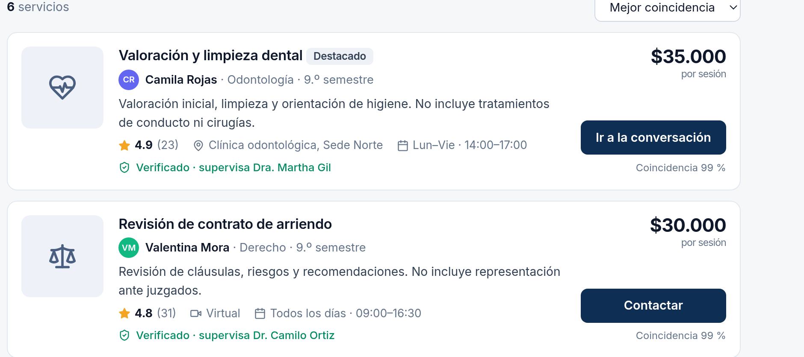
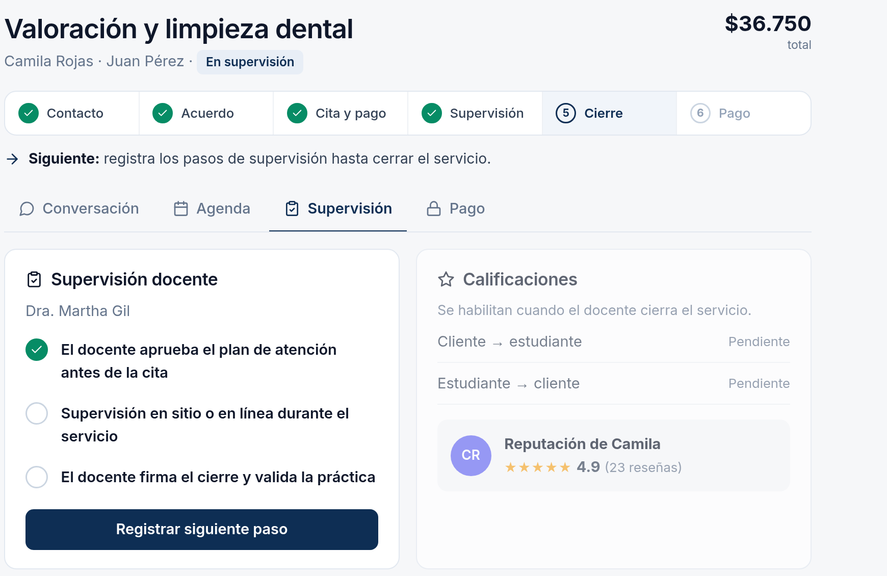

Problema
El estudiante de práctica necesita pacientes, casos o clientes reales para cumplir requisitos académicos. Hoy los consigue por WhatsApp y voz a voz, sin respaldo ni registro.
Del otro lado, quien busca un servicio más económico no tiene cómo saber si quien lo atiende está verificado, ni quién responde si algo sale mal.
Entrevistas de descubrimiento
- La supervisión de un docente da tranquilidad
- 7 de 7
- Piden reseñas y calificaciones verificables
- 6 de 7
- Esperan pagar menos que a un profesional titulado
- 7 de 7
Diez entrevistas: siete clientes potenciales, dos proveedores y una fuera de segmento.
“Perdí todos mis contactos al cambiar de teléfono.” Felipe, tutor independiente
Competencia
Ninguna alternativa actual combina supervisión docente y pago formal protegido.
- Consultorio de la facultadAgenda limitada, pocos casos por semestre
- Redes sociales y voz a vozSin verificación ni respaldo institucional
- Marketplaces de freelanceSin aval académico ni supervisión
Cómo funciona
- Perfil verificadoIdentidad y matrícula; el docente supervisor da el aval.
- Búsqueda y contactoFiltros por categoría, precio y modalidad; chat con el estudiante.
- Acuerdo explícitoAmbas partes aceptan alcance y precio antes de agendar.
- Agenda y pago retenidoSe reserva el horario real y el dinero queda en custodia.
- Supervisión docenteEl docente registra los pasos y cierra el servicio.
- Liberación o disputaEl cliente libera el pago; si hay problema, el docente resuelve.
El producto


Validación
11 de 12
sobre 10
sobre 10
Doce entrevistas con prueba del prototipo: siete estudiantes y cinco clientes potenciales. Cinco no lograron actuar en menos de cinco minutos y tres de ellos no sabían qué escribir; se añadieron plantillas de perfil, de servicio y de primer mensaje.
“Me ahorró mucho tiempo buscando un tutor.” Levis, cliente · prueba del prototipo
Modelo de negocio
- Comisión por servicio cerrado62% de los ingresos a tres años
- 11,9%
- Licencia de administración a facultades28% de los ingresos
- $6 M/sem.
- Suscripción Premium del estudiante9% de los ingresos
- $14.900/mes
- Ticket promedio ponderado
- $104.150
- Margen de utilidad a tres años
- 30,2%
Derecho y Psicología son gratuitos para el usuario por ley; ahí la facultad paga la licencia.
Mercado
- Pregrados con práctica obligatoria en Colombia
- 70.000
- Uniandes y Javeriana
- 5.000
- En semestre de práctica activa
- 1.500
- Piloto con tres docentes embajadores
- 30